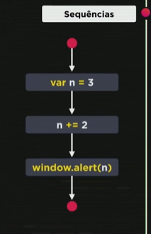
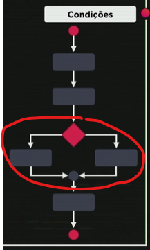
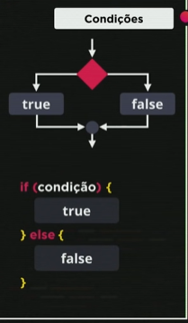

Sequências e Condições:
Quando temos um código sequêncial a ordem do que é feito importa, como no exemplo abaixo, a variável n precisa aparecer antes para ser adicionado um valor a ela e o valor final dela ser exposto em tela. Os desvios condicionais fazem com que nesse código tenhamos dois desvios, um caso o evento aconteça e outro caso ele não aconteça. Quando não temos o Else chamamos de condição simples.
  DETRAN
Sistema de multas
Velocidade do carro: km/h
Qual é a sua nacionalidade?
Sistema de conversão de nacionalidade
Informe no campo abaixo em que país você nasceu: